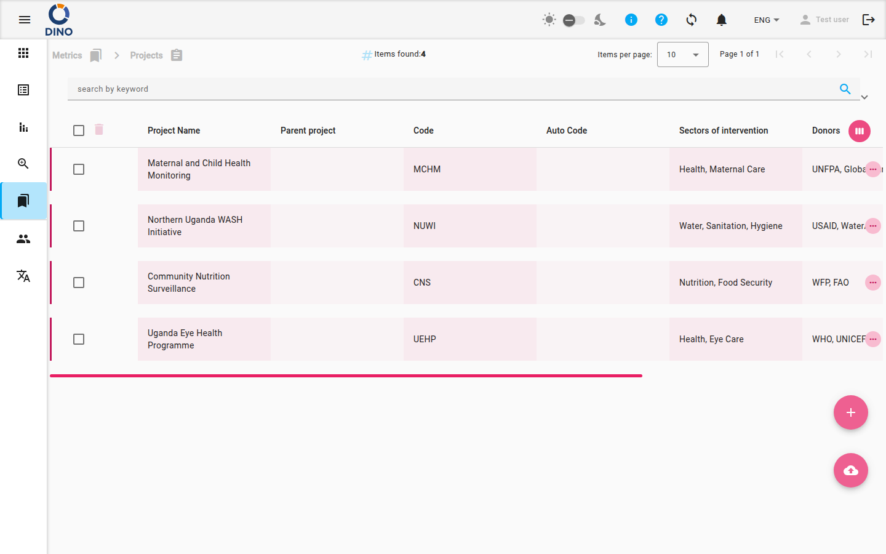

Projetos
A página Projetos no Dino permite gerenciar todos os seus registros estruturados de projetos. Você pode visualizar uma lista ordenável de projetos, adicionar novos, editar os existentes, excluí-los, importar dados em massa e exportar a lista para análise offline. A página também oferece ferramentas de filtragem poderosas para encontrar rapidamente o projeto desejado.

Navegando para Projetos
Para abrir a página Projetos, expanda a seção Métricas na navegação principal e selecione Projetos. A URL do navegador terminará com /metrics/projects.
Entendendo a Lista de Projetos
A tabela principal exibe uma lista de todos os projetos. Cada linha corresponde a um projeto e mostra as seguintes colunas por padrão:
- Nome do Projeto – O nome do projeto. Você pode ordenar a lista por esta coluna.
- Projeto Principal – O projeto de nível superior ao qual este projeto pertence, se houver.
- Código – Um código de projeto atribuído manualmente.
- Código Automático – Um código gerado automaticamente. Este campo é somente leitura e não pode ser editado.
- Setores de Intervenção – Os setores em que o projeto atua.
- Doadores – As fontes de financiamento do projeto.
- Data de Início – A data em que o projeto começa.
- Data de Término – A data em que o projeto termina.
Colunas ocultas (ID, Data de Criação e Atributos Adicionais) podem ser exibidas clicando no botão Personalizar colunas (o ícone se parece com uma visualização semanal) no canto superior direito da tabela.
Campos somente leitura
O campo Código Automático é gerado automaticamente e não pode ser alterado. Ele aparecerá esmaecido na caixa de diálogo de edição.
A barra de ferramentas superior exibe o número total de itens encontrados e um paginador. Você pode escolher quantos projetos visualizar por página.
Gerenciando Projetos
Adicionando um Novo Projeto
- Clique no botão flutuante Adicionar Novo (o ícone + circulado) no canto inferior direito da tela.
- Uma caixa de diálogo é aberta onde você preenche os detalhes do projeto. Os campos obrigatórios estão devidamente indicados.
- Pressione Salvar para criar o projeto. Ele aparecerá imediatamente na lista.
Editando um Projeto
- Na linha do projeto que deseja alterar, clique no ícone de edição (lápis).
- Modifique os campos na caixa de diálogo. O campo Código Automático ficará esmaecido.
- Clique em Salvar para aplicar suas alterações.
Visualizando um Projeto
- Clique no ícone de visualização (olho) na linha do projeto para abrir uma versão somente leitura dos detalhes do projeto.
Excluindo um Projeto
- Clique no ícone de exclusão (lixeira) na linha do projeto.
- Confirme a exclusão no pop-up. O projeto será removido permanentemente.
Excluir um projeto
Excluir um projeto o remove do sistema. Esta ação não pode ser desfeita. Certifique-se de ter selecionado o projeto correto antes de confirmar.
Pesquisando e Filtrando
A barra de pesquisa e filtros fica abaixo do caminho de navegação. Você pode:
- Pesquisar por palavra-chave – Digite qualquer termo no campo de palavra-chave; a lista é filtrada automaticamente.
- Filtrar por intervalo de datas – Use os seletores de Data de início e Data de término para restringir os projetos por data de início ou término.
- Aplicar filtros adicionais – Clique no botão lista de filtros (ícone de funil) para abrir uma caixa de diálogo com filtros mais avançados, como setores, doadores ou outros atributos personalizados.
- Salvar e carregar predefinições de filtro – Use o gerenciador de predefinições para salvar sua combinação atual de filtros e recarregá-la posteriormente.
Chips de filtro aparecem abaixo da barra de filtros, mostrando os filtros ativos. Você pode remover chips individuais clicando no ícone de cancelar em cada um.
Exportando e Importando
Exportando Projetos
- Clique no botão exportar (ícone de download de nuvem) na barra de filtros.
- Escolha o formato de exportação (por exemplo, CSV, Excel) e as colunas que deseja incluir.
- O arquivo será baixado para o seu computador.
Importando Projetos
- Clique no botão flutuante importar (ícone de upload de nuvem) no canto inferior direito.
- Faça upload de um arquivo formatado corretamente (por exemplo, CSV ou Excel). O sistema criará ou atualizará projetos com base nos dados.
- Revise os resultados da importação para verificar erros ou avisos.
Ações em Lote
Você pode selecionar vários projetos usando as caixas de seleção à esquerda de cada linha. Quando pelo menos um projeto estiver selecionado, a barra de ferramentas acima da tabela exibe ações em lote:
- Excluir selecionados – Remove todos os projetos selecionados após confirmação.
- Editar selecionados (edição em lote) – Abre uma caixa de diálogo onde você pode editar um campo comum para todos os projetos selecionados de uma só vez.
Após editar ou excluir em lote, a lista é atualizada automaticamente.